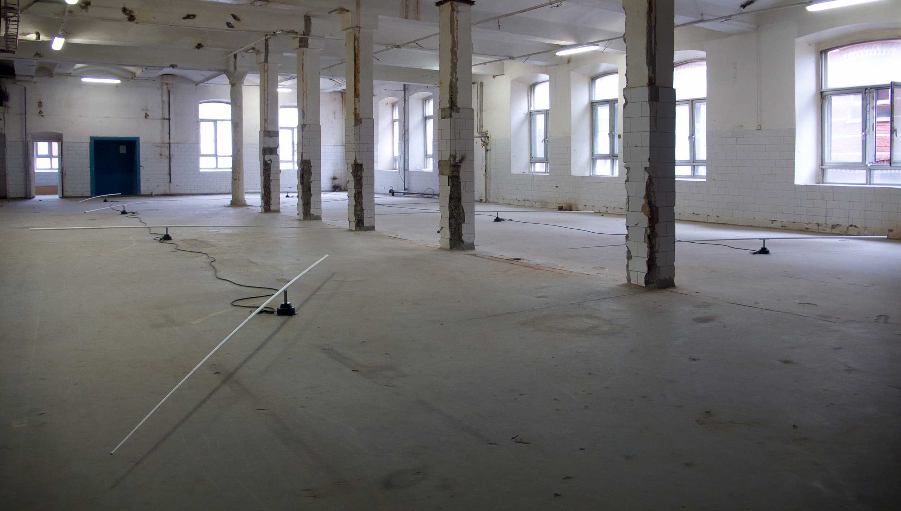

Revolution Per Minute
3rd Moscow Biennial of Contemporary Art, Red October, Moscow
2009
3rd Moscow Biennial of Contemporary Art, Red October, Moscow
2009
Carbon-fibre rods, electric motors with reduction gear, bearings, axles
Eight white rods revolved slowly just above the floor in a former
factory hall. The 1 rpm rotation was caused by electronic rotary
motors placed on the floor. The rods' direction of rotation
varied.
